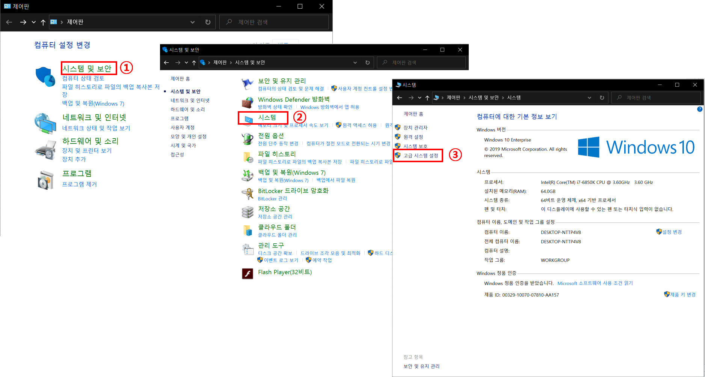
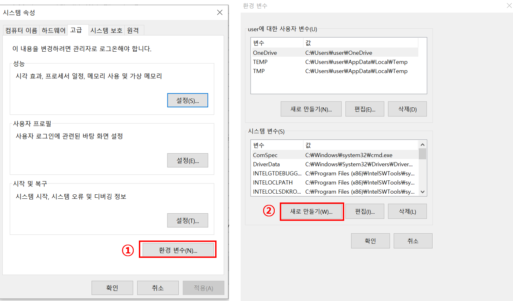
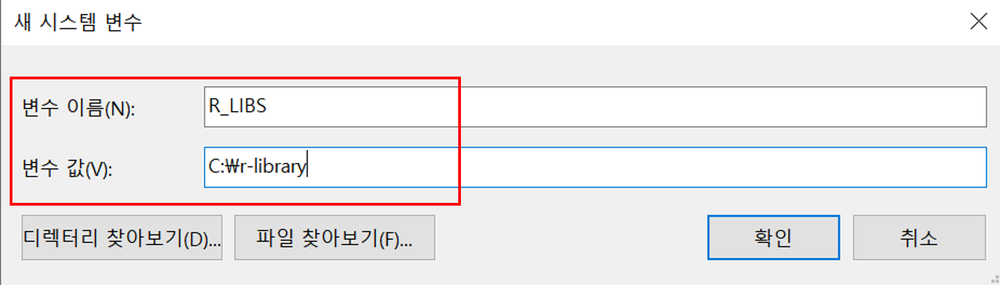
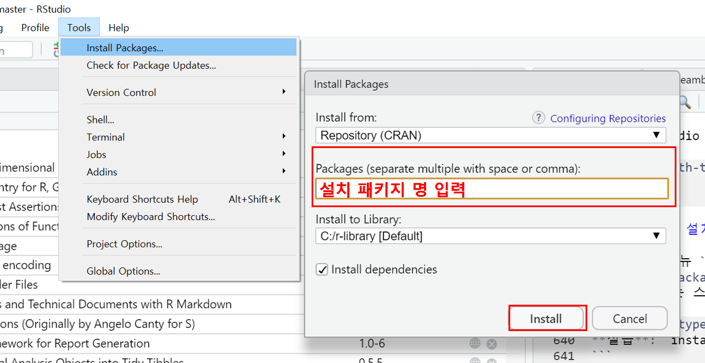
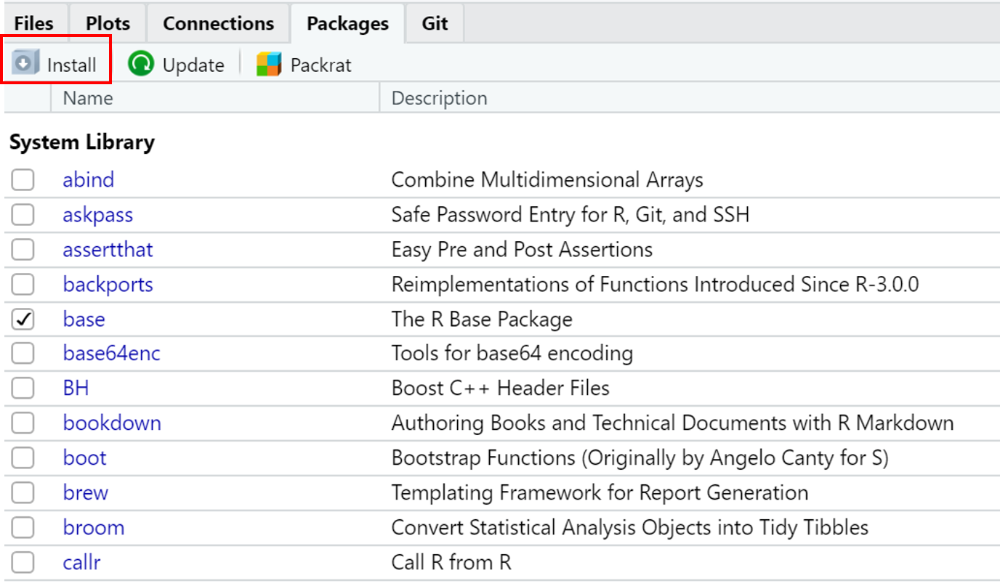

1.5 R 패키지
R 패키지(package): 특수 목적을 위한 로직으로 구성된 코드들의 집합으로 R에서 구동되는 분석툴을 통칭
- CRAN을 통해 배포: 3자가 이용하기 쉬움 \(\rightarrow\) R 시스템 환경에서 패키지는 가장 중요한 역할
- CRAN available package by name 또는 available package by date에서 현재 등재된 패키지 리스트 확인 가능
- R console에서
available.packages()함수를 통해서도 확인 가능 - 현재 CRAN 기준(2020-03-17) 배포된 패키지의 개수는 16045 개임
1.5.1 R 패키지 경로 확인 및 변경
- 패키지 설치 시 일반적으로 R 환경에서 기본값으로 지정한 라이브러리 폴더에 저장
- 패키지 설치 전 R 패키지 설치 경로(path) 지정
.libPaths()함수를 통해 현재 설정된 패키지 저장 경로 확인
[1] "C:/Users/user/Documents/R/win-library/4.0"
[2] "C:/Program Files/R/R-4.0.0/library" - 일반적으로 첫 번째 경로를 디폴트 라이브러리 폴더로 사용
- 사용자 지정 라이브러리 경로를 설정 하려면 아래와 같은 절차로 진행
실습: c:/r-library 폴더를 패키지 경로로 지정
C:\에서 [새로 만들기(W)] -> [폴더(F)] 선택 후 생성 폴더 이름을r-library로 변경윈도우즈
[제어판] -> [시스템 및 보안] -> [시스템] -> [고급 시스템 설정]클릭

[환경변수(N)...]선택 후 시스템 변수에서[새로 만들기(W)...]클릭

- 아래 그림과 같이 변수 이름(N)에
R_LIBS, 변수 값(V)에 해당 디렉토리 경로C:\r-library입력 후 확인 버튼 클릭

- 현재 RStudio 종료 후 재실행한 다음 콘솔창에
.libPaths()입력 후 라이브러리 경로 확인
1.5.2 R 패키지 설치하기
- RStudio 메뉴
[Tools]\(\rightarrow\)[Install packages]클릭 후 생성된 팝업 창에서 설치하고자 하는 패키지 입력 후 설치

- RStudio
Packages창에서[Install]버튼 누르면 위와 동일한 팝업창이 나타남(위와 동일)

- R 콘솔 또는 스크립트 창에서
install.packages(package_name)함수를 사용해서 패키지 설치
실습:
install.packages() 함수를 이용해 tidyverse 패키지 설치
위 명령어를 실행하면
tidyverse패키지 뿐 아니라 연관된 패키지들이 동시에 설치됨
1.5.3 R 패키지 불러오기
library()vs.require()library(): 불러오고자 하는 패키지가 시스템에 존재하지 않는 경우 에러 메세지 출력(에러 이후 명령어들이 실행되지 않음)require(): 패키지가 시스템에 존재하지 않는 경우 경고 메세지 출력(경고 이후 명령어 정상적으로 실행)
- 다중 패키지 동시에 불러오기
- RStudio
Packages창에서 설치하고자 하는 패키지 선택 버튼 클릭하면 R workspace로 해당 패키지 로드 가능 - 스크립트 이용
- RStudio
실습:
tidyverse 패키지 불러오기
필요한 패키지를 로딩중입니다: tidyverse-- Attaching packages ------------------------------------------------------------------------------------------------------------- tidyverse 1.3.0 --√ ggplot2 3.3.1 √ purrr 0.3.4
√ tibble 3.0.1 √ dplyr 1.0.0
√ tidyr 1.1.0 √ stringr 1.4.0
√ readr 1.3.1 √ forcats 0.5.0-- Conflicts ---------------------------------------------------------------------------------------------------------------- tidyverse_conflicts() --
x dplyr::filter() masks stats::filter()
x dplyr::group_rows() masks kableExtra::group_rows()
x dplyr::lag() masks stats::lag()
실무에서 R의 활용능력은 패키지 활용 여부에 달려 있음. 즉, 목적에 맞는 업무를 수행하기 위해 가장 적합한 패키지를 찾고 활용하느냐에 따라 R 활용능력의 차이를 보임. 앞서 언급한 바와 같이 CRAN에 등록된 패키지는 16000 개가 넘지만, 이 중 많이 활용되고 있는 패키지의 수는 약 200 ~ 300 개 내외이고, 실제 데이터 분석 시 10 ~ 20개 정도의 패키지가 사용됨. 앞 예제에서 설치하고 불러온
tidyverse 패키지는 Hadley Wickham (Wickham et al. 2019)이 개발한 데이터 전처리 및 시각화 패키지 번들이고, 현재 R 프로그램 환경에 지대한 영향을 미침. 본 강의 “데이터프레임 가공 및 시각화”에서 해당 패키지 활용 방법을 배울 예정
References
Wickham, Hadley, Mara Averick, Jennifer Bryan, Winston Chang, Lucy D’Agostino McGowan, Romain Francois, Garrett Grolemund, et al. 2019. “Welcome to the tidyverse.” Journal of Open Source Software 4 (43): 1686. https://doi.org/10.21105/joss.01686.